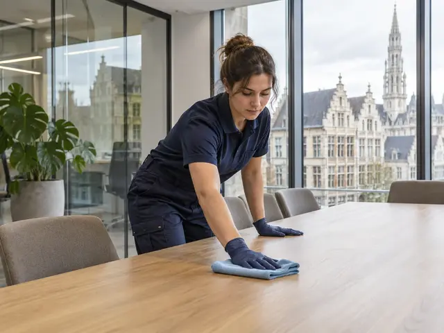
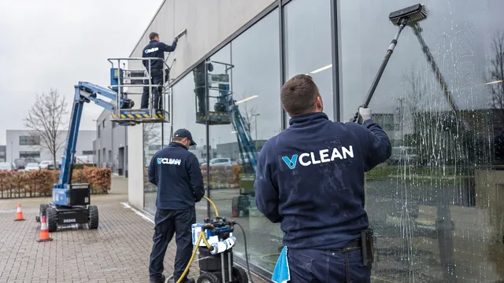
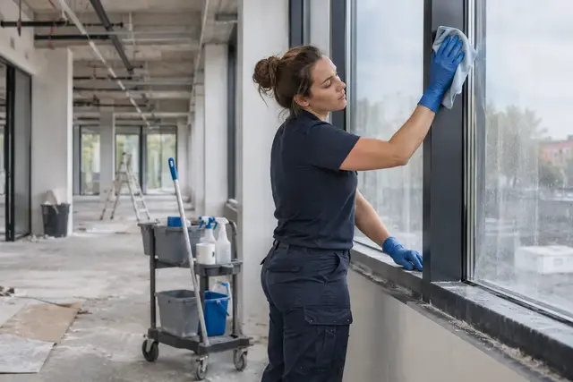
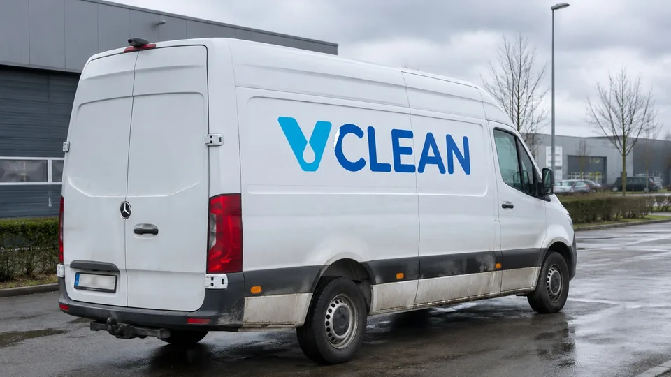

Kantoor & winkel
Dagelijks of wekelijks onderhoud van kantoren, winkels en showrooms.
Kantoren · Winkels · Industrie · Ramen & gevels
Eén aanspreekpunt, een schoonmaakplan voor je site en een fotorapport na elke shift.
Vaste ploeg Dezelfde gezichten die je site kennen
Fotorapport na elke shift Je ziet wat er gedaan is
Eén aanspreekpunt Voor planning, vragen en vervanging
Diensten
Vier groepen, 15 diensten. Kies wat het dichtst in de buurt komt; de details bespreken we tijdens het plaatsbezoek.

Dagelijks of wekelijks onderhoud van kantoren, winkels en showrooms.

Hallen, magazijnen, vloeren, vloeronderhoud en productieruimtes, rond je shifts.

Ramen, gevels, daken, dakgoten en zonnepanelen, ook met drone.

Eenmalig: na een verbouwing, bij een oplevering of na een verhuis.
Werkwijze
Stap 1 van 4
Je vertelt in drie korte stappen wat je wil laten schoonmaken, waar en hoe vaak. Dat kan via de aanvraag onderaan deze pagina.
Stap 2 van 4
Je aanspreekpunt komt langs en overloopt met je de ruimtes, de taken, de toegang (sleutel, badge, alarm) en de werkuren.
Stap 3 van 4
Je krijgt een schoonmaakplan per zone met de taken en de frequentie, en een offerte die daarbij hoort.
Stap 4 van 4
Je vaste ploeg start op de afgesproken dag. Na elke shift krijg je een fotorapport. Je aanspreekpunt volgt de kwaliteit op en regelt de vervanging bij afwezigheid.
Sectoren
Over ons
V CLEAN maakt kantoren, winkels en bedrijfssites schoon, binnen en buiten. De schoonmaak is een opdracht van V CLEAN: wij zorgen voor de ploeg, de planning, de vervanging en de opvolging. Na het plaatsbezoek leggen we in een schoonmaakplan vast wat er gebeurt, wanneer en hoe vaak.
V CLEAN naast andere oplossingen →
FAQ
De prijs hangt af van de oppervlakte, de taken, de frequentie en de toegankelijkheid. Daarom bekijken we je site eerst ter plaatse. Daarna krijg je een offerte die past bij het schoonmaakplan.
Geef je gewenste werkuren mee bij je aanvraag. We bekijken samen welke momenten haalbaar zijn voor jouw locatie.
Ja. Vermeld de adressen en geef per locatie kort aan welke schoonmaak je nodig hebt.
Het type locatie, de postcode, de gewenste frequentie en de ruimtes of taken die je wil laten opnemen. Een geschatte oppervlakte helpt ook. De aanvraag hieronder vraagt je precies dat.
Dat spreken we af tijdens het plaatsbezoek en leggen we vast in het schoonmaakplan.
V CLEAN neemt de schoonmaak op als opdracht. Wij organiseren de ploeg, de planning en de vervanging bij afwezigheid. Jij hebt één contactpersoon.
Offerte
Drie korte stappen. Daarna plannen we een plaatsbezoek. Reactietermijn: [IN TE VULLEN: reactietermijn].
↑↓ kiezen · Enter openen · Esc sluiten
 →
→